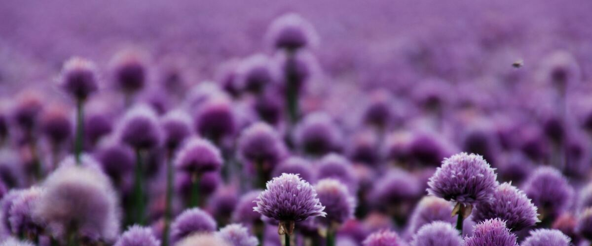

When to plant chives in Walla Walla, WA
Plant chives in the garden in Walla Walla Apr 1 – May 27, either as seeds or as young plants started indoors Feb 4–18.
- Difficulty
- Easy
- Sun
- Full sun to part shade
- Spacing
- 8 to 12 inches apart
- Planting depth
- ¼ inch deep
- Frost
- Handles light frost
- First harvest
- About 60 days after planting
Why these dates
Walla Walla's typical last spring frost is March 27. In the Columbia Basin and low eastern valleys, the soil is usually ready for chives around April 1.
Columbia Basin and low eastern valleys. Hot, dry summers and quick spring warm-up. Warm crops go in earlier than west of the Cascades, and irrigation matters more than rain.
How to grow chives in Walla Walla
- Start seeds indoors Feb 4–18 in trays or small pots under a grow light or in your sunniest window. Or skip this step and buy young plants (starts) at a garden center.
- Harden off the young plants: about a week before planting, set them outside for a few hours a day, a little longer each day.
- Plant them in the garden Apr 1 – May 27, 8 to 12 inches apart. If you plant seeds instead, sow them ¼ inch deep.
- Water deeply once or twice a week rather than a little every day, and mulch once the soil is warm.
- Harvest: Snip leaves an inch above the soil whenever you need them. The purple flowers are edible too.
Key numbers
- 60–70°FSoil to sprout
- 6.0–7.0Soil pH
- Every 3–4 yearsDivide
- Well below 0°FHardy to
Growing notes
What makes the difference in Northwest gardens, in plain language.
Getting started
Chives grow easily from seed, but they're slow at first, so many gardeners start seeds indoors or buy a small plant. A friend's clump is even better: a few bulbs dug from an established plant take off right away. Chives like ordinary garden soil with some compost, steady moisture and at least half a day of sun.
They're fully hardy everywhere in the Northwest. The leaves die back in a hard freeze and return early in spring, often the first fresh herb of the year.
Cutting and flowers
Cut leaves near the base rather than snipping the tips; tip-cut leaves turn brown and ragged. After the purple flowers fade in early summer, shear the whole clump to a couple of inches above the soil. It regrows fresh, tender leaves within a few weeks.
Removing spent flowers also stops self-seeding. Common chives seed around a bit, and garlic chives, with their flat leaves and white late-summer flowers, can seed aggressively if left alone.
Keeping chives for winter
Chives lose most of their flavor when dried. Freezing works much better: chop fresh leaves, spread them on a tray to freeze, then store them in a jar or bag in the freezer and use them straight from frozen. A pot of chives on a bright windowsill also gives small cuttings through winter.
Pests are rare, though onion thrips can cause silvery streaks on leaves in hot, dry eastern summers. A spray of water helps.
Common questions
When is the last frost in Walla Walla, WA?
Typically March 27. In 9 years out of 10, frost is over by April 22. These are 1991–2020 NOAA climate normals for Walla Walla Regional Airport.
Is it too late to plant chives in Walla Walla?
The spring planting window runs through May 27. Later plantings tend to struggle in summer heat.
When should I start chives from seed indoors in Walla Walla?
February 4 to February 18, which is 8 to 6 weeks before the April 1 planting date. Or buy young plants at a garden center instead.
Should I let my chives flower?
You can. The flowers are edible and loved by bees. Cut them off once they fade, though, to keep the plant from seeding all over and to get a fresh flush of leaves.
What's the difference between chives and garlic chives?
Common chives have hollow, round leaves, purple spring flowers and a mild onion flavor. Garlic chives have flat leaves, white late-summer flowers and a garlicky taste. Both are hardy perennials grown the same way.
How do I preserve fresh chives?
Freeze them. Chop the leaves, freeze them spread out on a tray, then bag them. Dried chives keep their color but lose most of their flavor.
Also plant in Walla Walla around the same time
Planting dates for chives in nearby areas
- Yakima, WA Apr 10 – Jun 5
- Tri-Cities (Pasco, Kennewick, Richland), WA Apr 1 – May 27
- Moses Lake, WA Apr 1 – May 27
- Ellensburg, WA Apr 15 – Jun 10
- Ephrata and Quincy, WA Apr 1 – May 27
- Sunnyside, Grandview and Prosser, WA Apr 3 – May 29
Full planting calendar for Walla Walla · Chives in every city